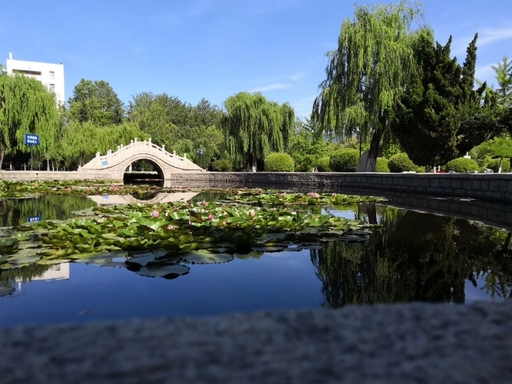

快速导航： 跳转到“自然风光”章节
清晨的鲁东大学的校园里，阳光穿过枝叶，在跑道上洒下斑驳的光影。两旁的大树郁郁葱葱，微风拂过，叶片沙沙作响，偶尔落下几片细碎的影子。 花坛里的花开得正好，粉白相间，伴着淡淡的清香。不远处的小湖边，垂柳轻垂，水面泛着粼粼波光，偶尔有几声鸟鸣，让整个校园显得宁静又充满生机。真是美极了。 校园中央的草坪绿意葱茏，像是一块无边无际的绿绒地毯，鲜嫩的小草在阳光下肆意生长，偶尔点缀着几朵不知名的小野花，白的、黄的、紫的，星星点点， 随风轻轻摇曳，引来蝴蝶与蜜蜂在花丛中翩跹起舞。学校中蓝天、白云、绿树与教学楼相映，充满了诗意。
鲁东大学人文景观整体兼具历史文脉与师范底蕴，依山就势、自然与人文相融，以杏坛广场、镜心湖、文学博物馆等为代表，既保留了古朴雅致的中式园林意境与传统教化内涵， 又融入现代校园的简洁大气，处处体现尊师重道、书香育人的氛围，景观布局规整有序、含蓄厚重，兼具文化纪念性与公共休憩性，彰显着学校深厚的人文积淀与精神传承。
